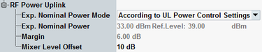

The following parameters configure the expected uplink power.

- "According to UL Power Control Settings"
The UL power is calculated automatically from the UL power control settings. The resulting expected nominal power is displayed for information. The displayed reference level is calculated as:
Reference Level = Expected Nominal Power + 7 dB MarginWhich UL power control settings are considered depends on the connection states:– No connection: see "PMax (PCL)" – Call established (CS): see "Circuit Switched > PCL" – TBF established (PS): see "Gamma" - "Manual"
In manual mode, the expected nominal power and a margin can be defined manually. The displayed reference level is calculated as:
Reference Level = Expected Nominal Power + Margin
The margin is used to account for the known variations (crest factor) of the RF input signal power.
Note: The actual input power at the connectors must be within the level range of the selected RF input connector. The input level is calculated as the reference level minus the external attenuation value, if all power settings are configured correctly). Refer to the data sheet.
The parameters can be changed in all main connection states including "Connection Established".
Remote command:Varies the input level of the mixer in the analyzer path of the multi-evaluation measurement in combined signal path. A negative offset reduces the mixer input level, a positive offset increases the mixer input level. Optimize the mixer input level according to the properties of the uplink signal.
Mixer level offset | Advantages | Possible shortcomings |
|---|---|---|
< 0 dB | Suppression of distortion (e.g. of the intermodulation products generated in the mixer) | Lower dynamic range (due to smaller signal-to-noise ratio) |
> 0 dB | High signal-to-noise ratio, higher dynamic range | Risk of intermodulation, smaller overdrive reserve |